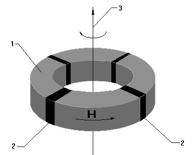

Alexander A. Shpilman(sah@kaznet.kz)
Spin-field Generator
Everyone knows that elementary particles can have the following properties : electric charge, magnetic dipole moment, and the moment of quantity of motion, i.e. spin, and these properties are connected with each other. The electric charge manifests as electric field in the space surrounding this particle, the magnetic moment manifests as magnetic field, and the manifestation of spin can be seen as the hypothetical ?spin-field?.
What is spin?
The spins of electrons and protons are considered to be connected with their moments of quantity of motion. But since this conception contradicts the prohibition against faster-than-light velocities, spin is therefore considered to be just a quantum-mechanical value. So, we know that there exists the physical value called ?spin?. If in any substance the spins of particles have a preferable direction, then this is interpreted as spin polarization of the substance. Every substance creates a spin-field in the space surrounding it when polarized by spins. (This field is also called ?torsion field? or ?axion field? in different works).
How is it possible to produce the spin-field and how can it manifest? Since the spins of elementary particles can be a source for the spin-field, we can consider that a spin-field can be produced as a result of spin polarization, i.e. the selective orientation of spins in space. The simplest way to achieve a selective spin orientation is through the mechanical rotation of objects. Thus, the spins will be oriented along the axis of rotation.
Barnet applied this method in his experiments when he observed the magnetization of a ferrite rod as a result of the rod's rotation. Since the spin is connected with the magnetic moment, the spin-field produced as a result of selective spin orientation manifested itself as magnetization of a ferrite rod.
But the effective creation of a spin-field using this method has several problems. Since the orienting moment of gyroscopic forces is proportional to the vector product of the gyroscopic moment and the angular velocity vector, then there is an absence of selective (by sign) orientation effect on the spins of particles oriented parallel to the rotation axis by the gyroscopic forces. Secondly, the magnetic fields produced as a result of spin polarization will orient the particles of which the rod is made (electrons and nucleii) not by their gyroscopic moment, but by their magnetic moment. The third problem is that the spin-field will be produced in the same space as the magnetic field, thus, it will confound the analysis of the spin-field.
These problems can be solved in the case of rotation of objects made of substances having anisotropic properties (e.g. electromagnetic properties.) The anisotropy should be directed with some angle in respect to the rotation axis (this angle should be greater than or equal to the angle of the spins? precession in respect to the axist of anisotropy). Thus :
At first, it is necessary to orient the particles along (with respect to) the object's axis of spatial anisotropy. And this axis of anisotropy must be oriented with some angle with respect to the axis of rotation of the object. As a result, we can provide the necessary gyroscopic moment that affects the spins of particles of which the rotating substance is made (this gyroscopic moment is proportional to the vector product of the gyroscopic moment and the angular velocity of the spin vector of the rotating substance, i.e. it is proportional to the sine of the angle between them, it has the maximum value if the angle is equal to 90 degrees and the minimum value if the angle is equal to zero, and it also increases with the increase of the angular velocity of rotation). Thus, we can increase the quantity of the selectively oriented spins of this substance.
Secondly, it is necessary to use the anisotropy of the properties of substance (space) whose effect is greater than the substance's electromagnetic polarization that originates from it?s spin polarization due to the dipole and quadrupole moments of this substance. Thus, as a result of orientation of EM-properties in some angle with respect to the rotation axis, we can achieve a separation of the spin-field and the magnetic field in space due to the rotation of the vector of the EM-polarization of the substance with respect to the spin-polarization vector.
An increase of the effect of selective orientation of gyroscopic forces, spin polarization, and the strength of the spin-field, can be achieved with an increase of excess of gyroscopic forces over orienting effects of other external and internal forces (electromagnetic). The particles (electrons and nucleii) are not in equal conditions in real substances and they are always in the process of thermal motion, therefor the optimal values of the angular velocity, the anisotropy of properties, and the angle between the axes of rotation and anisotropy should depend on the parameters of the material and on the nature of physical construction of the device.
Nevertheless, the angle between the rotation axis and the axis of anisotropy should be equal or more than 30 degrees according to the experimental data.
Due to external sources, it is possible to achieve an anisotropy of substances in practice , e.g. the external (electromagnetic) field that does not slow down the rotation of the active elements of the material employed. It is also possible to use the inherent anisotropy of this substance that is due to it?s crystal structure, the concentration gradient, the deformation of crystal structure, etc. and it is possible to use both variants.
An example for implementing this method is proposed below.
This is the diagram for the spin-field generator.
The generator consists of a rotating hollow cylinder made of ferrite-magnetic material with the axis of rotation coinciding with the cylinder?s main symmetry axis. Four (wedge-like) permanent magnets are inserted into the cylinder. The magnets are magnetized perpendicularly to their own plane. The cylinder can take the form of either a flat ring or a tube. It is possible to cause the cylinder's rotation (to create the motor) with different methods, but it is necessary to take into account that external EM-fields, and the materials used in the motor can alter the properties of the spin-field significantly.

One of the possible variants of implementation of this method consists of :
The experiments with the active spin-field generators revealed the following results :
The spin-field does not interact with the crystal lattice of substances. Thus, it has strong penetration ability (it propagates through both ferroconcrete and lead). Isotropic substances that could screen the spin-field were not found in the experiments. Only zinc and steel can produce a delay in the propagation, becoming a source of a spin-field themselves. Basically, the interaction of a spin-field and the transfer of energy of spin-waves is observed in the case of the resonance interaction with the spins of electrons and nucleii of matter. Thus, the effective control of the orientation of spins of matter is possible, and this is a completely new method for the control of its physical and chemical properties. This theoretical hypothesis was confirmed experimentally. Interesting results were achieved when producing effects in biological objects with the spin-field radiation. Some parameters of this radiation can provoke an increase of the ?grow energy? of plants and an increase of animal?s immune systems.
The spin-field cannot be detected by ordinary detectors. In some cases (with the special elucidation) the spin-field can be seen without use of any instruments.
The spin-field produced by the generator described above is concentrated in two opposite beams propagating along the rotation axis at a distance of tens of meters. These beams can have four different attributes depending on the mutual orientation of magnetic induction vector and the direction of motor rotation. The beam that propagates along axis 3 in the diagram is the most harmless for man. Nevertheless, it is unsafe to be exposed to this beam for more than several minutes. When the rotation is stopped, the intensity of spin-field decreases to some constant value that can be retained for several weeks, i.e. the spin-field (and it?s influence) can remain even when the generator is turned off.